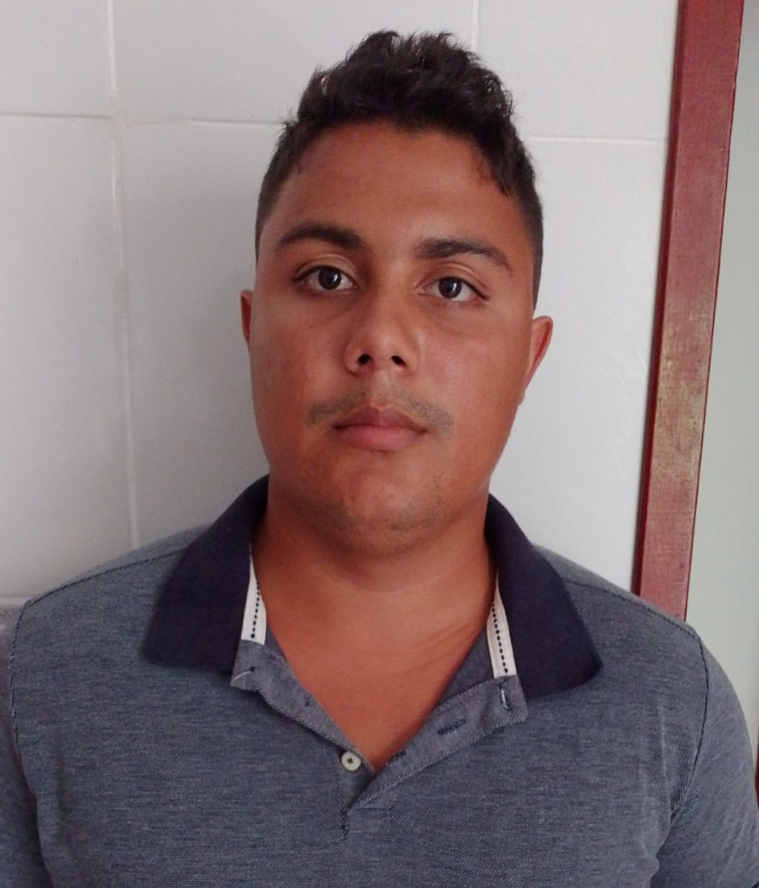

<!DOCTYPE html>
<html lang="pt-br">
<head>
    <meta charset="UTF-8">
    <meta name="viewport" content="width=device-width, initial-scale=1.0">
    <title>Currículo</title>
    <link rel="stylesheet" href="https://stackpath.bootstrapcdn.com/bootstrap/4.5.2/css/bootstrap.min.css">
    <link rel="stylesheet" href="curriculo.css"> 

</head>
<body>
    <div class="container">
    </div>
</body>
</html>

<body>
    <div class="container">
        <div class="row">
            <div class="col-md-4 text-center">
                
            </div>
            <div class="col-md-8">
                <h1 class="mb-4">Anderson Vieira da Costa</h1>
        <ul class="personal-info">
            <li><strong>Sexo:</strong> Masculino</li>
            <li><strong>Idade:</strong> 26 anos</li>
            <li><strong>Nacionalidade:</strong> Brasileiro</li>
        </ul>
            </div>
        </div>

        <h2 class="section-title">Objetivo</h2>
        <p>Meu objetivo é aplicar minhas habilidades para contribuir de forma significativa para uma empresa dinâmica, onde possa continuar aprendendo, crescendo profissionalmente e colaborando com uma equipe talentosa para alcançar metas desafiadoras.</p>

        <h2 class="section-title">Experiência Profissional</h2>
        <ol>
            <li>Cruzeiro do Sul LTDA - Analista de Redes de Computadores</li>
            <li>SENSO Soluções LTDA - Conferente</li>
        </ol>

        <h2 class="section-title">Educação</h2>
        <ul>
            <li>Ensino Médio completo</li>
            <li>Manutenção de Redes  - SENAI/SESI</li>
            <li>Resiclagem de Impressora</li>
            <li>Liderança - Intitudo de Vencedores</li>
            <li>Engenharia de Software - Universidade de Vassouras - RJ (Cursando...)</li>
        </ul>

        <h2 class="section-title">CNH</h2>
        <ul>
            <li>Categoria B</li>
        </ul>

        <h2 class="section-title">Competências e Habilidades</h2>
        <ul>
            <li>Trabalho em Equipe</li>
            <li>Proativo</li>
            <li>Facilidade para Aprender</li>
            
        </ul>

        <h2 id="contato" class="section-title">Informações de Contato</h2>
        <ul class="contact-info">
            <li><strong>Telefone:</strong>(21) 99459-8652</li>
            <li><strong>E-mail:</strong>andersonv560@gmail.com</li>
            <li><strong>Endereço:</strong> Rua Vila Odete Lacerda Dantas Nº270, Madruga - Vassouras/RJ</li>
            <li><a href="https://github.com/andfla98">GitHub</a></li>
        </ul>
    </div>
</body>
<footer>
    <h4>&copy; 2024 Anderson Costa</h4>
</footer>
</html>